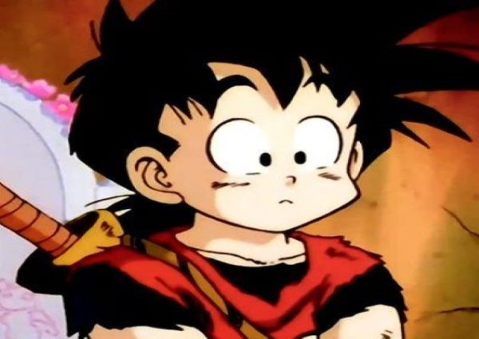

Um breve resumo
Gohan é um garoto tímido e estudioso graças a sua mãe, não tendo muito do espírito de luta como seu pai ou os outros Saiyajins de sangue puro o que o diferencia deles, no entanto quando luta se mostra bastante poderoso tornando-se um dos mais importantes Guerreiros Z.
Como seu pai Goku tem um coração puro e gentil, além de ter o apetite típico de Saiyajin que está quase sempre com fome. Gohan também tem uma forte ligação com seu mentor Piccolo. Após a morte de Goku, Piccolo escolhe treinar Gohan pois ele sentiu o potencial de luta do garoto, que seria usado para ajudar a defender a Terra do ataque dos Saiyajins.
Primeiro, sua relação com Piccolo é assustadora, mas após apenas um ano, Piccolo admite ter mudado devido à amizade que ele tem com Gohan e até se sacrifica para salvar o menino. Por causa disso, Piccolo pode ser considerado um pai substituto para Gohan.
Kuririn também tem influência sobre Gohan, quase como uma relação tio/sobrinho, principalmente porque Kuririn é o melhor amigo de Goku.
Embora ele clama que ele não ama lutar como Goku, Gohan na verdade gosta sim de aventura e artes marciais. É também óbvio que ele ama grandemente ser um herói.
